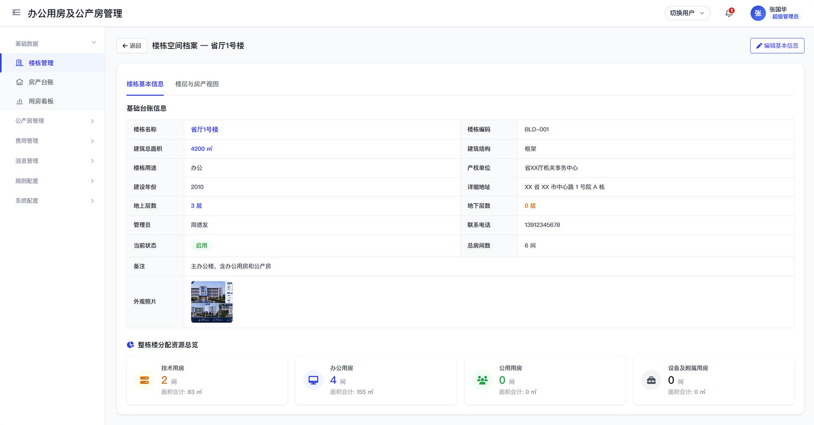
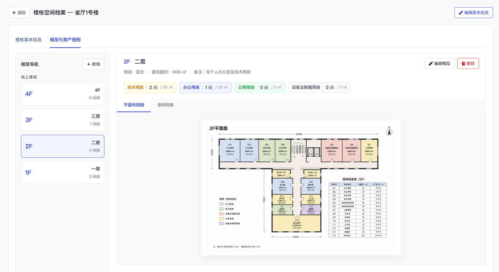
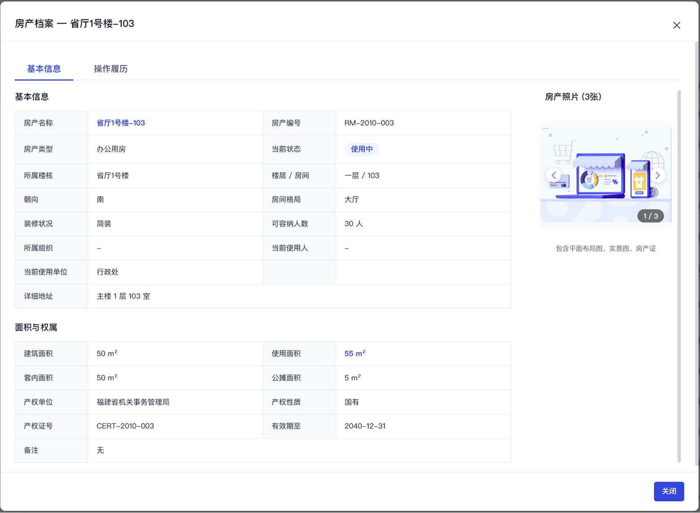
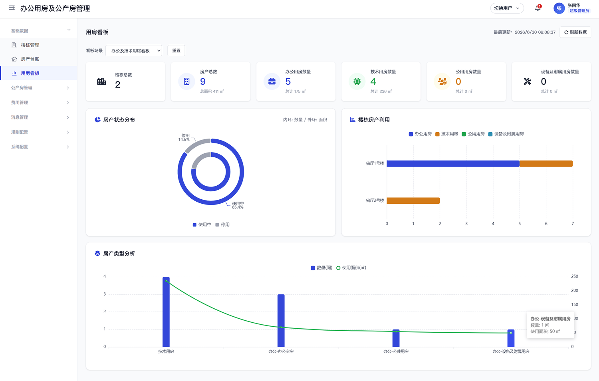
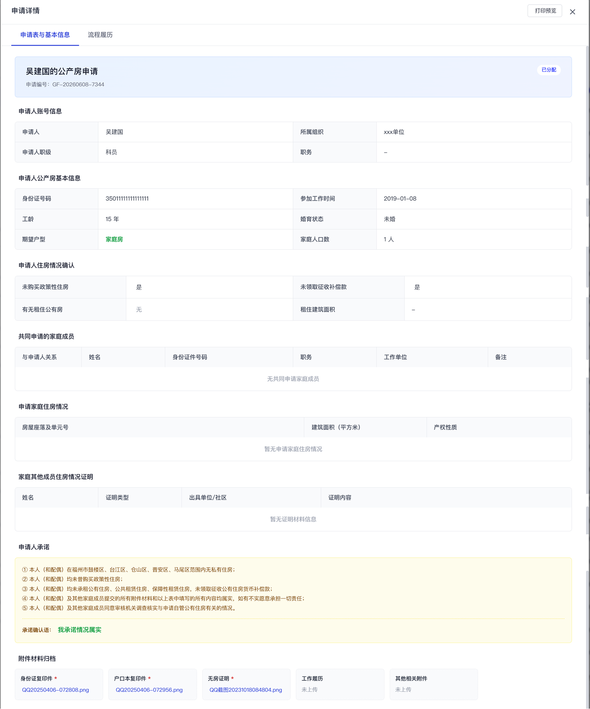
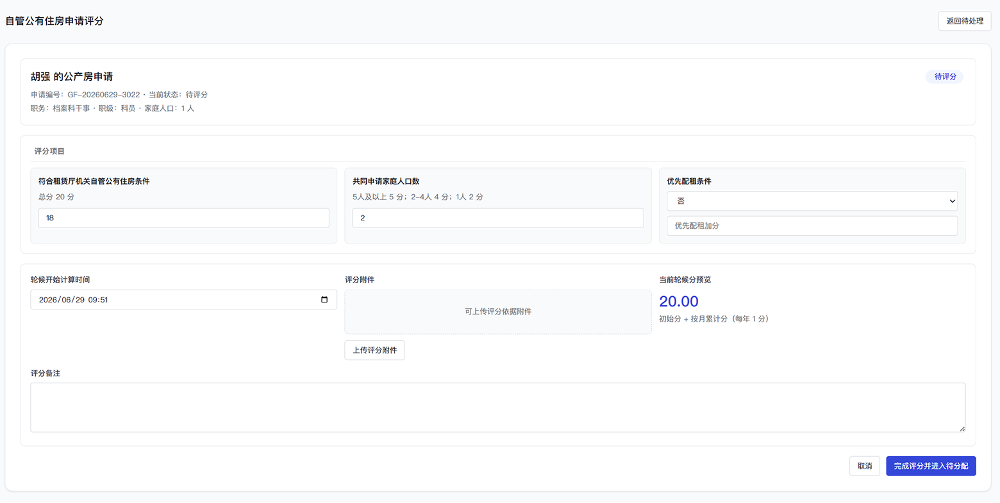
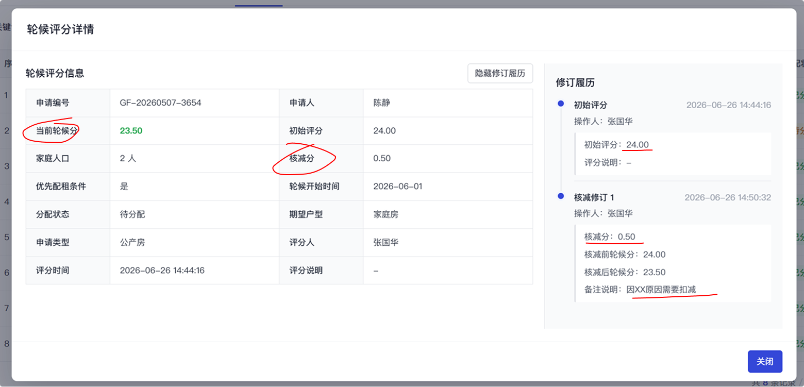
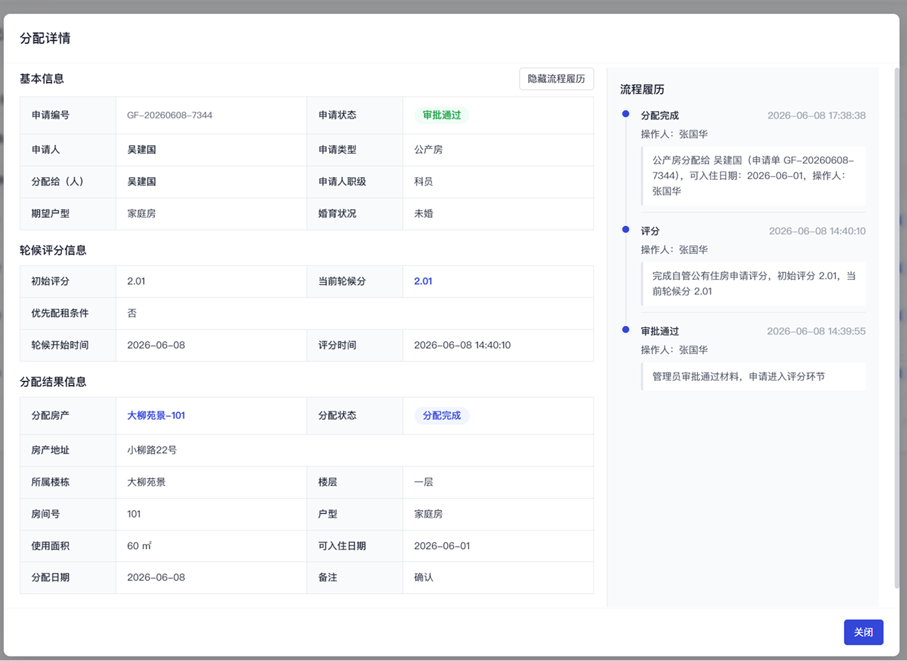
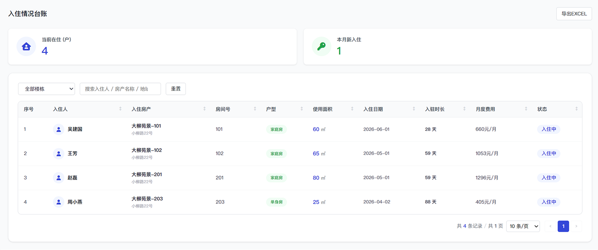
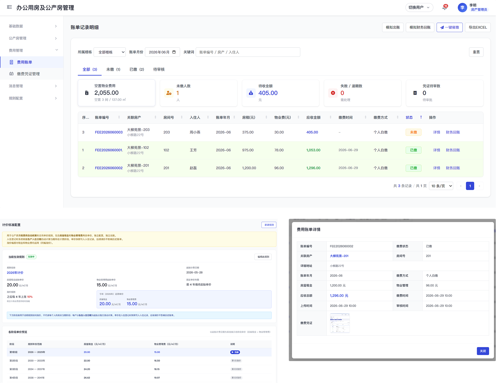

模块二：办公用房及公产房管理
统一空间台账，支撑办公用房核查与公产房全流程管理
耗材管理
公产房管理
预定管理
3.1 办公用房业务现状：楼宇信息未完整维护、空间底数不清、面积口径不一
解决办公用房管理中“底数不清、面积不准、状态不明、统计困难”的问题。
楼宇信息未完整维护
部分办公楼宇、楼层、房间等基础信息尚未形成完整台账，后续统计缺少统一数据来源。
空间底数不清
办公用房总面积不清楚，各类型用房分别占多少面积缺少统一统计，难以准确掌握资源规模和结构。
面积口径不一
建筑面积、使用面积、房间面积等统计口径容易混用，导致不同汇总结果之间存在差异，也容易造成后续重复核验。
3.2 办公用房建设方案：统一测绘 + 统一口径 + 分类统计
以实测空间数据为基础，建立楼栋、楼层、房间一体化管理台账，形成空间资源可查、状态可管、面积可统的办公用房管理基础。
3.3 办公用房预期成效：办公空间资源一张账
通过统一测绘、台账补齐和分类统计，逐步摸清办公用房总量、面积口径和类型结构。
| 指标 | 系统建设后 | 说明 |
|---|---|---|
| 已测绘楼宇数量 | 已测绘办公楼宇：XX 栋 | 通过统一测绘，摸清办公楼宇基础底数。 |
| 已建账房间数量 | 已建账房间：XX 间 | 按楼栋、楼层、房间建立空间台账。 |
| 办公用房总面积 | 核准办公用房总面积：XX ㎡ | 以测绘成果为基础，形成统一面积数据。 |
| 各类型用房面积 | 已分类用房类型：XX 类 | 支持按办公、技术用房、公用用房、附属用房类型统计面积。 |
| 统一面积口径 | 统一 3 类面积口径 | 建筑面积、使用面积、房间面积分口径统计，避免混用。 |
3.4 场景演示：办公空间资源查询与核查
通过楼栋、楼层、房间和实测图纸联动，管理人员可以快速回答“有哪些房、在哪里、谁在用、面积多少、状态如何”。
1. 楼栋档案： 查看楼栋基础信息，掌握建设年份、总建筑面积、楼层数量、楼栋用途和使用状态。

2. 楼层管理： 按楼栋查看楼层信息，关联实测楼层平面图，直观掌握楼层空间分布、功能区构成和房间位置。

3. 房间台账： 查看房间编号、所属楼层、房间类型、建筑面积、使用面积、当前状态和使用单位。

4. 统计分析： 按楼栋、房间类型、使用状态和面积进行统计分析，为资源调配、空间利用分析和领导查询提供支撑。

3.5 公产房业务现状：从人工台账到动态闭环
解决公产房管理中“房源状态不清、申请轮候难管、费用核算耗时、退房释放不及时”的问题。
房源状态不够清楚
在住、空置、退房等状态依赖人工台账更新。
入住流转缺少线上记录
申请、轮候、分配、入住过程难以完整追溯。
费用核算耗时
房租、物业费清单需要人工计算、核对后提交财务。
3.6 公产房建设方案：申请轮候 + 分配入住 + 费用账单 + 退房释放
围绕公产房从申请到退房的管理过程，形成房源动态管理和费用核算闭环。
3.7 公产房预期成效：房源状态与费用核算可视化
通过房源、入住状态和费用账单数据沉淀，支撑公产房动态管理和费用核对。
| 指标 | 系统建设后 |
|---|---|
| 公产房总套数 | 在住、空置、退房等状态动态维护 |
| 在住房源数 | 申请记录和轮候评分线上留痕 |
| 空置房源数 | 分配结果线上记录，房源状态同步更新 |
| 月度账单数量 | 系统按面积、标准和状态生成费用账单 |
| 月度应收金额 | 费用清单可导出、可核对、可追溯 |
| 空置房物业费测算金额 | 费用清单可导出、可核对、可追溯 |
3.8 公产房场景演示：从申请入住到退房释放
申请 → 轮候评分 → 房源分配 → 入住管理 → 费用账单 → 年度核验 → 退房释放
1. 申请： 申请人填写个人信息、家庭成员、住房情况及证明材料；房产管理员审核申请，审核通过后进入轮候评分，驳回后可修改再提交。

2. 轮候评分： 房产管理员录入轮候初始分、轮候起算时间、评分明细和附件；系统形成当前轮候分和轮候排行，作为后续房源分配依据。

3. 轮候分调整： 特殊情况可按规则调整轮候分，分配时结合轮候排序、申请诉求和空置房源进行匹配。

4. 房源分配： 结合申请人房型诉求、轮候排序和当前空置房源确定分配结果；记录分配房产、可入住日期和备注，系统生成待入住记录并通知申请人。

5. 入住管理： 管理员通过入住情况查看在住人员、入住房间、入住日期、入住时长、房间面积和费用标准。

6. 费用账单： 系统按账单月份生成房租、物业费和应收总额；费用根据房间面积、入住时长、租金标准和物业费标准计算；缴费方式支持财务扣缴和个人自缴，个人自缴需上传缴费凭证；房产管理员审核缴费凭证，并统计空置公产房物业费支出。

7. 年度核验： 房产管理员按年度发起核验任务，系统通知在住人员提交无房证明等材料；核验材料由房产管理员审核，审核结果作为继续入住资格管理依据。
8. 退房释放： 住户可发起本人退房申请，由房产管理员确认退房；特殊情况下可由房产管理员发起退房处理，退房完成后房源恢复为空闲可分配。
3.9 建设价值：管清房产底数，管住公房流转，支撑费用闭环
办公用房和公产房共同构成房产资源管理板块。办公用房侧重空间资源底座，解决楼栋、楼层、房间、面积、用途和使用状态统一管理问题；公产房侧重房源流转和费用管理，解决申请、分配、费用账单和退房释放闭环问题。